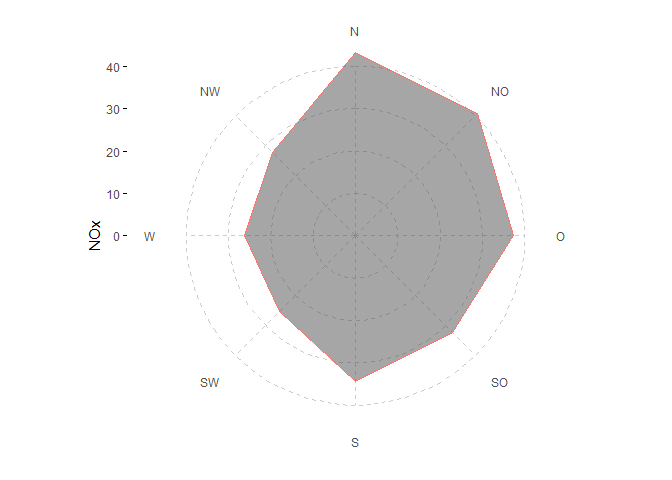
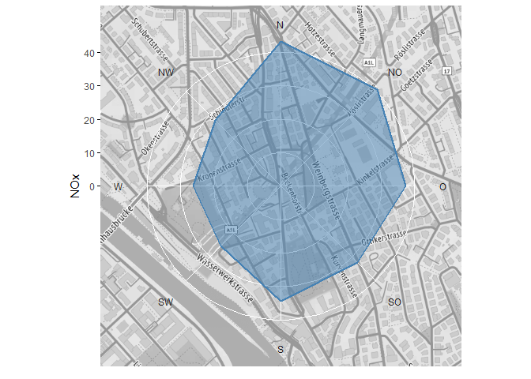
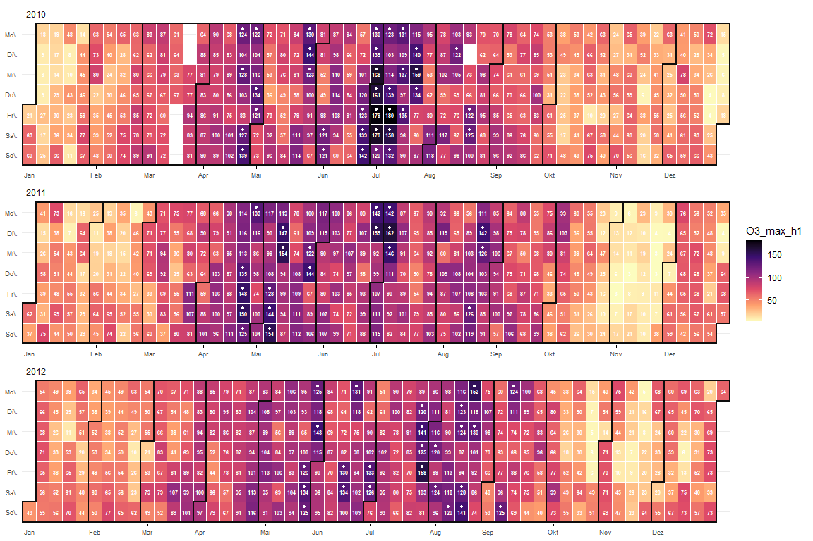

Erstellen von Diagrammen für Ostluft Auswertungen und Berichte mit Bezug zu Luftschadstoffen und Meteorologie. Einige Funktionen sind aus dem package openair abgeleitet. Alle plot-Funktionen sind grundsätzlich auf das ggplot2 package bezogen.
Installation
Der Quellcode von rOstluft.plot ist auf github gehosted. Die einfachste Variante ist die Installation mit Hilfe des Packages devtools:
Beispiele
library(rOstluft.plot)
library(rOstluft)
library(rOstluft.data)
library(ggplot2)
library(dplyr)
library(lubridate)
library(tibble)
library(purrr)
library(scales)
library(openair)
data <-
rOstluft.data::f("Zch_Stampfenbachstrasse_2010-2014.csv") %>%
rOstluft::read_airmo_csv() %>%
rOstluft::rolf_to_openair() %>%
openair::cutData(date, type = "daylight") %>%
tibble::as_tibble() %>%
dplyr::mutate(
wday = lubridate::wday(date, label = TRUE, week_start = 1),
year = lubridate::year(date)
)Windrose auf Karte
bb <- bbox_lv95(2683141, 1249040, 500)
bg <- get_stamen_map(bb)
ggwindrose(data, ws, wd, ws_max = 4, bg = bg, ) +
theme(
panel.grid.major = element_line(linetype = 2, color = "black", size = 0.5)
)
# Für Facetten müssen die facet Variablen in groupings enthalten sein:
ggwindrose(data, ws, wd, ws_max = 4, groupings = grp(daylight)) +
facet_wrap(vars(daylight))# y Achse kann wie gewohnt mit einer scale_y_continuous angepasst werden
# das untere Limit sollte auf 0 gesetzt werden
ggwindrose(data, ws, wd, ws_max = 4, groupings = grp(daylight)) +
facet_wrap(vars(daylight)) +
scale_y_continuous(
limits = c(0, NA),
expand = expand_scale(),
labels = scales::percent_format(1),
breaks = seq(0, 0.3, 0.05)
)
Radar-chart Windstatistik

# mehrere Statistik Funktionen
q05 <- function(x, ...) quantile(x, 0.05, ...)
q95 <- function(x, ...) quantile(x, 0.95, ...)
stat_reorder <- function(stat) {
factor(stat, levels = rev(c("perc05", "median", "mean", "perc95")))
}
ggradar(data, aes(x = wd, y = NOx, fill = stat, group = stat),
fun = list("perc05" = q05, "median", "mean", "perc95" = q95),
fun_reorder = stat_reorder, color = NA, alpha = 0.9) +
scale_y_continuous(limits = c(0,120)) +
scale_fill_viridis_d(begin = 0.2)# Karte als Hintergrund
bb <- bbox_lv95(2683141, 1249040, 500)
bg <- get_stamen_map(bb)
ggradar(data, aes(x = wd, y = NOx), bg = bg, lwd = 1,
color = "steelblue", fill = "steelblue", alpha = 0.5) +
theme(
panel.grid.major = element_line(linetype = 1, color = "white"),
axis.text.x = element_text(color = "gray10")
)
polarplot openair-style
fs <- scale_fill_gradientn_squished(
limits = c(0,50), breaks = seq(0,50,10),
na.value = NA, colors = matlab::jet.colors(20)
)
ggpolarplot(data, wd = wd, ws = ws, z = NOx, ws_max = 4,
bg = bg, alpha = 0.6,
fill_scale = fs, smooth = TRUE, breaks = c(0,2,4)
) +
theme(
panel.grid.major = element_line(linetype = 2, color = "black", size = 0.5)
)
Kalender + stat_filter
Kalender der max Stundenwerte des Tages von Ozon
statstable <- tibble::tribble(
~parameter, ~statistic, ~from, ~to,
"O3", "mean", "input", "h1",
"O3", "max", "h1", "d1"
)
data_d1 <-
rOstluft.data::f("Zch_Stampfenbachstrasse_2010-2014.csv") %>%
rOstluft::read_airmo_csv() %>%
dplyr::filter(starttime < lubridate::ymd(20130101)) %>%
rOstluft::calculate_statstable(statstable) %>%
purrr::pluck("d1") %>%
rOstluft::rolf_to_openair()
ggcalendar(data_d1, z = "O3_max_h1") +
scale_fill_viridis_c(direction = -1, option = "magma", na.value = NA) +
cal_month_border(size = 1) +
stat_filter(
aes(filter = O3_max_h1 > 120), size = 1,
color = "white", fill = "white", shape = 21,
position = position_nudge(y = 0.25)
) +
cal_label(aes(label = round(O3_max_h1,0)), fontface = "bold")
Hysplit Trajektorien (openair data format)
fn <- system.file("extdata", "2017_ZH-Kaserne-hysplit.rds", package = "rOstluft.data")
traj <- readRDS(fn)
traj <- dplyr::filter(traj,
dplyr::between(lubridate::as_date(date), lubridate::ymd("2017-03-08"), lubridate::ymd("2017-03-14"))
)
# simple
ggtraj(traj)# Schadstoff statt Trajektorienhöhe
# Interessant für den Transport von Schadstoffen wie EC. In diesem Beispiel wird PM2.5
# verwendet weil keine EC Daten in den Beispieldaten enthalten sind.
data_2017 <-
rOstluft.data::f("Zch_Stampfenbachstrasse_min30_2017.csv") %>%
rOstluft::read_airmo_csv() %>%
rOstluft::rolf_to_openair()
data_traj <-
dplyr::select(data_2017, -site) %>%
dplyr::right_join(traj, by = "date")
ggtraj(data_traj, aes(color = PM2.5),
color_scale = ggplot2::scale_color_viridis_c(direction = -1))
Squishing data
Messdaten enthalten oft Extremwerte von ausserordentlichen Episoden oder Ereignissen. Als Beispiel Feuwerwerke oder Inversionen in den PM10 Daten:

In einem ggplot2 Diagramm kann bei continuous scales mit Hilfe dem Argument oob eine Funktion übergeben werden, was mit Werten ausserhalb des Limits geschieht. Mit Hilfe der Funktion scales::squish() werden diese Werte auf das Minima, bzw. Maxima der Limits gesetzt. In rOstluft.plot sind die Hilfsfunktionen scale_fill_viridis_squished(), scale_color_viridis_squished(), scale_fill_gradientn_squished() und scale_color_gradientn_squished() enthalten:
fill_scale <- scale_fill_viridis_squished(
breaks=c(0, 20, 40, 60, 80),
limits = c(0, 80),
direction = -1,
na.value = NA,
option = "A"
)
ggyearday(data, time = date, z = PM10, fill_scale = fill_scale)
Teilweise ist es für Klassierungen praktisch alle Werte über einem Maximum in einer zusätzlichen Klasse zusammen zu fassen. Die Funktion cut_ws() beinhaltet diese Funktionalität, hat jedoch gewisse Einschränkungen (Negative Werte werden zu NA, Breite der Klasse fix):
pm10_left <- cut_ws(data$PM10, 20, 80, right = FALSE)
# bei der Umwandlung der Ausgabe nach HTML wird "≥80" in "=80"
# umgewandelt. In Diagrammen und der R Konsole wird das Zeichen
# jedoch korrekt dargestellt. See https://github.com/r-lib/evaluate/issues/59
table(pm10_left)Für mehr Flexibilät kann direkt base::cut() verwendet werden und breaks mit -Inf und Inf definiert werden.
padding data
Messdaten liegen nicht immer in vollständigen Zeitreihen vor. Für einige Diagramme ist es jedoch erforderlich, dass für alle Zeitpunkte ein Wert oder ein NA vorhanden ist. Für Daten im rolf Format können die rOstluft Funktionen rOstluft::pad() und rOstluft::pad_year() verwenden werden. rOstluft.plot enthält 2 generische padding Funktionen:
fn <- rOstluft.data::f("Zch_Stampfenbachstrasse_min30_2013_Jan.csv")
january <- rOstluft::read_airmo_csv(fn)
january_oa <- rOstluft::rolf_to_openair(january
)
tail(january_oa)#> # A tibble: 6 x 16
#> date site CO Hr NO NO2 NOx O3 p PM10
#> <dttm> <fct> <dbl> <dbl> <dbl> <dbl> <dbl> <dbl> <dbl> <dbl>
#> 1 2013-01-31 21:00:00 Zch_~ 0.191 67.3 0.675 7.70 4.57 71.0 970. 7.21
#> 2 2013-01-31 21:30:00 Zch_~ 0.195 64.9 0.359 7.72 4.33 69.7 970. 4.89
#> 3 2013-01-31 22:00:00 Zch_~ 0.191 65.1 0.424 6.84 3.92 69.0 970. 6.71
#> 4 2013-01-31 22:30:00 Zch_~ 0.184 67.3 0.353 5.38 3.09 70.5 970. 5.19
#> 5 2013-01-31 23:00:00 Zch_~ 0.186 67.3 0.634 5.87 3.58 70.2 969. 5.79
#> 6 2013-01-31 23:30:00 Zch_~ 0.189 68.7 0.435 6.76 3.88 67.6 969. 7.92
#> # ... with 6 more variables: RainDur <dbl>, SO2 <dbl>, StrGlo <dbl>,
#> # T <dbl>, wd <dbl>, ws <dbl># site mit "Zch_Stampfenbachstrasse" füllen
pad_to_year(january_oa, date, "30 min", fill = list(site = "Zch_Stampfenbachstrasse")) %>%
tail()#> # A tibble: 6 x 16
#> date site CO Hr NO NO2 NOx O3 p PM10
#> <dttm> <fct> <dbl> <dbl> <dbl> <dbl> <dbl> <dbl> <dbl> <dbl>
#> 1 2013-12-31 21:00:00 Zch_~ NA NA NA NA NA NA NA NA
#> 2 2013-12-31 21:30:00 Zch_~ NA NA NA NA NA NA NA NA
#> 3 2013-12-31 22:00:00 Zch_~ NA NA NA NA NA NA NA NA
#> 4 2013-12-31 22:30:00 Zch_~ NA NA NA NA NA NA NA NA
#> 5 2013-12-31 23:00:00 Zch_~ NA NA NA NA NA NA NA NA
#> 6 2013-12-31 23:30:00 Zch_~ NA NA NA NA NA NA NA NA
#> # ... with 6 more variables: RainDur <dbl>, SO2 <dbl>, StrGlo <dbl>,
#> # T <dbl>, wd <dbl>, ws <dbl># automatisch alle factor/character columns füllen
pad_to_year_fill(january_oa, date, "30 min") %>%
tail()#> # A tibble: 6 x 16
#> date site CO Hr NO NO2 NOx O3 p PM10
#> <dttm> <fct> <dbl> <dbl> <dbl> <dbl> <dbl> <dbl> <dbl> <dbl>
#> 1 2013-12-31 21:00:00 Zch_~ NA NA NA NA NA NA NA NA
#> 2 2013-12-31 21:30:00 Zch_~ NA NA NA NA NA NA NA NA
#> 3 2013-12-31 22:00:00 Zch_~ NA NA NA NA NA NA NA NA
#> 4 2013-12-31 22:30:00 Zch_~ NA NA NA NA NA NA NA NA
#> 5 2013-12-31 23:00:00 Zch_~ NA NA NA NA NA NA NA NA
#> 6 2013-12-31 23:30:00 Zch_~ NA NA NA NA NA NA NA NA
#> # ... with 6 more variables: RainDur <dbl>, SO2 <dbl>, StrGlo <dbl>,
#> # T <dbl>, wd <dbl>, ws <dbl>#> # A tibble: 6 x 6
#> starttime site parameter interval unit value
#> <dttm> <fct> <fct> <fct> <fct> <dbl>
#> 1 2013-12-31 21:00:00 Zch_Stampfenbachstras~ WVv min30 m/s NA
#> 2 2013-12-31 21:30:00 Zch_Stampfenbachstras~ WVv min30 m/s NA
#> 3 2013-12-31 22:00:00 Zch_Stampfenbachstras~ WVv min30 m/s NA
#> 4 2013-12-31 22:30:00 Zch_Stampfenbachstras~ WVv min30 m/s NA
#> 5 2013-12-31 23:00:00 Zch_Stampfenbachstras~ WVv min30 m/s NA
#> 6 2013-12-31 23:30:00 Zch_Stampfenbachstras~ WVv min30 m/s NA# enthalten die Daten jedoch eine Klassifizierungs Spalte
# muss man die zu füllenden Spalten explixit angeben
january_oa <- openair::cutData(january_oa, "month") %>%
dplyr::select(date, month, dplyr::everything())
# Monats Spalte wird falscherweise mit Januar gefüllt
# Ausserdem würden für jeden Monat die Daten multipliziert
pad_to_year_fill(january_oa, date, "30 min") %>%
tail()#> # A tibble: 6 x 17
#> date month site CO Hr NO NO2 NOx O3 p
#> <dttm> <ord> <fct> <dbl> <dbl> <dbl> <dbl> <dbl> <dbl> <dbl>
#> 1 2013-12-31 21:00:00 Janu~ Zch_~ NA NA NA NA NA NA NA
#> 2 2013-12-31 21:30:00 Janu~ Zch_~ NA NA NA NA NA NA NA
#> 3 2013-12-31 22:00:00 Janu~ Zch_~ NA NA NA NA NA NA NA
#> 4 2013-12-31 22:30:00 Janu~ Zch_~ NA NA NA NA NA NA NA
#> 5 2013-12-31 23:00:00 Janu~ Zch_~ NA NA NA NA NA NA NA
#> 6 2013-12-31 23:30:00 Janu~ Zch_~ NA NA NA NA NA NA NA
#> # ... with 7 more variables: PM10 <dbl>, RainDur <dbl>, SO2 <dbl>,
#> # StrGlo <dbl>, T <dbl>, wd <dbl>, ws <dbl># mit explixiter Defintion der zu füllenden Spalten klappt es
pad_to_year_fill(january_oa, date, "30 min", site) %>%
tail()#> # A tibble: 6 x 17
#> date month site CO Hr NO NO2 NOx O3 p
#> <dttm> <ord> <fct> <dbl> <dbl> <dbl> <dbl> <dbl> <dbl> <dbl>
#> 1 2013-12-31 21:00:00 <NA> Zch_~ NA NA NA NA NA NA NA
#> 2 2013-12-31 21:30:00 <NA> Zch_~ NA NA NA NA NA NA NA
#> 3 2013-12-31 22:00:00 <NA> Zch_~ NA NA NA NA NA NA NA
#> 4 2013-12-31 22:30:00 <NA> Zch_~ NA NA NA NA NA NA NA
#> 5 2013-12-31 23:00:00 <NA> Zch_~ NA NA NA NA NA NA NA
#> 6 2013-12-31 23:30:00 <NA> Zch_~ NA NA NA NA NA NA NA
#> # ... with 7 more variables: PM10 <dbl>, RainDur <dbl>, SO2 <dbl>,
#> # StrGlo <dbl>, T <dbl>, wd <dbl>, ws <dbl>Karten Attribution: Map tiles by Stamen Design, under CC BY 3.0. Data by OpenStreetMap, under ODbL.